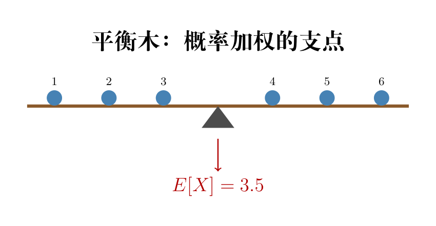

画面： 一根长木条，上面站着六个小人，分别站在位置 1, 2, 3, 4, 5, 6（骰子的六个面）。你在这根木条下面放一个支点，放在哪个位置木条刚好平衡不倾斜？
当所有人都一样重时（公平骰子），支点放在正中间 3.5 的位置。这就是期望——概率加权的平衡支点。
$$\mathbb{E}[X] = 1\times\frac{1}{6} + 2\times\frac{1}{6} + \cdots + 6\times\frac{1}{6} = 3.5$$期望 ≠ 最可能的值。 骰子没有"最可能的面"（均匀分布）。期望 3.5 是对长期平均的预测——掷一万次取平均，结果趋向 3.5。不是对下一次掷几点的预测。

连续版： 把求和换成积分：$\mathbb{E}[X] = \int_{-\infty}^{\infty} x \cdot f(x)\,dx$。每个 $x$ 用它的概率密度加权。
离散期望的定义是对所有可能取值概率加权求和：
$$\mathbb{E}[X] = \sum_i x_i \cdot P(X = x_i) = \sum_i x_i \cdot p_i$$过渡到连续情形时，把实数轴切成宽度为 $\Delta x$ 的小段。$X$ 落在 $[x, x+\Delta x]$ 内的概率近似为 $f(x) \cdot \Delta x$（密度 × 宽度）：
$$\mathbb{E}[X] \approx \sum_k x_k \cdot f(x_k) \cdot \Delta x$$这就是黎曼和的形式：每个小区间里的 $x$ 值，用该点的概率密度 × 区间宽度来加权。
令 $\Delta x \to 0$，黎曼和的极限就是定积分：
$$\mathbb{E}[X] = \lim_{\Delta x \to 0} \sum_k x_k \cdot f(x_k) \cdot \Delta x = \int_{-\infty}^{\infty} x \cdot f(x)\,dx$$核心直觉：$p_i$（概率质量）→ $f(x)\,dx$（概率密度 × 无穷小宽度）。$\sum$ 变成 $\int$，一切照旧。
画面： 你和朋友比赛扔飞镖。你们俩的平均命中点都在靶心（期望都是 0），但你的飞镖散布得很开——满靶子都是孔——而朋友的飞镖全挤在靶心周围。谁的方差大？你的大。差多少？方差给出精确的数字。
$$\text{Var}(X) = \mathbb{E}[(X - \mu)^2]$$逐符号拆开：
计算捷径： $\text{Var}(X) = \mathbb{E}[X^2] - \mu^2$——用"平方的平均"减去"平均的平方"。手算时方便很多，不用先减均值再平方。
从定义出发，展开平方：
$$\begin{aligned} \text{Var}(X) &= \mathbb{E}\big[(X - \mu)^2\big] \\[4pt] &= \mathbb{E}\big[X^2 - 2\mu X + \mu^2\big] \quad \text{(展开平方)} \\[4pt] &= \mathbb{E}[X^2] - 2\mu\,\mathbb{E}[X] + \mu^2 \quad \text{(期望的线性性质)} \\[4pt] &= \mathbb{E}[X^2] - 2\mu \cdot \mu + \mu^2 \quad (\mathbb{E}[X] = \mu) \\[4pt] &= \mathbb{E}[X^2] - 2\mu^2 + \mu^2 \\[4pt] &= \mathbb{E}[X^2] - \mu^2 \end{aligned}$$关键两步都在用期望的线性：$\mathbb{E}[X^2 - 2\mu X + \mu^2] = \mathbb{E}[X^2] - 2\mu\mathbb{E}[X] + \mu^2$。常数 $\mu^2$ 的期望就是它自己（$\mathbb{E}[c] = c$）。
方差还有另一种写法：$\mathbb{E}[|X-\mu|]$——用绝对值度量偏离。为什么不用这种？
关键原因：光滑性。
画一下 $|x|$ 和 $x^2$ 的图像你就懂了：
想象你在一个尖角上站着（绝对值），一脚踩下去不知道该往哪边滑。光滑的碗底（平方）就不会有这个问题——每一步都明确知道要往哪个方向走。
这个性质在优化里至关重要。所有用梯度的方法（梯度下降）都要求函数是可导的。平方让方差变得「可优化」，绝对值不行。这就是方差不用绝对值的深层原因——不仅是为了消除正负抵消，还是为了让优化器能在光滑的坡上安心走路。
标准差 $\sigma = \sqrt{\text{Var}(X)}$： 方差单位是原单位平方（比如「平方厘米」），开根号后单位和原数据一致（「厘米」）。σ 就是天然的距离尺子。
$$\mathbb{E}[aX + b] = a\cdot\mathbb{E}[X] + b$$
从离散期望的 $\Sigma$ 定义展开：
$$\begin{aligned} \mathbb{E}[aX + b] &= \sum_i (a x_i + b) \cdot P(X = x_i) \\[4pt] &= \sum_i \big(a x_i \cdot p_i + b \cdot p_i\big) \\[4pt] &= a \sum_i x_i \cdot p_i \;+\; b \sum_i p_i \\[4pt] &= a \cdot \mathbb{E}[X] \;+\; b \cdot 1 \\[4pt] &= a\,\mathbb{E}[X] + b \end{aligned}$$第二行拆括号：$(ax_i + b)p_i = a x_i p_i + b p_i$。第三行把 $a$ 和 $b$ 分别提到求和外面。第四行用 $\sum p_i = 1$（概率归一化）。
$$\mathbb{E}[X + Y] = \mathbb{E}[X] + \mathbb{E}[Y]$$
从联合概率质量函数 $P(X=x, Y=y)$ 出发：
$$\begin{aligned} \mathbb{E}[X + Y] &= \sum_x \sum_y (x + y) \cdot P(X = x,\; Y = y) \\[4pt] &= \sum_x \sum_y x \cdot P(X = x, Y = y) \;+\; \sum_x \sum_y y \cdot P(X = x, Y = y) \\[4pt] &= \sum_x x \underbrace{\sum_y P(X = x, Y = y)}_{=\,P(X = x)} \;+\; \sum_y y \underbrace{\sum_x P(X = x, Y = y)}_{=\,P(Y = y)} \\[4pt] &= \sum_x x \cdot P(X = x) \;+\; \sum_y y \cdot P(Y = y) \\[4pt] &= \mathbb{E}[X] + \mathbb{E}[Y] \end{aligned}$$关键：第三步对 $y$ 求和（边缘化）得到 $X$ 的边缘分布 $P(X=x)$。这一步不依赖 $X$ 和 $Y$ 是否独立——边缘化总是成立的。这就是为什么期望的加法不需要独立性假设。
不管 $X$ 和 $Y$ 是否独立，期望的加法都成立。这是期望最强大的性质。
$$\text{Var}(aX + b) = a^2\cdot\text{Var}(X)$$
常数 $b$ 消失了！ 全班所有人同时长高 10cm——每个人离均值的距离完全不变，方差当然不变。平移不改变分散程度。
$a$ 被平方了：如果全班身高翻倍（a=2），方差变成原来的 4 倍。不仅散得更开，而且平方放大了差异。
令 $\mu = \mathbb{E}[X]$。首先算变换后的期望（用推导 1 的结果）：
$$\mathbb{E}[aX + b] = a\mu + b$$代入方差的定义：
$$\begin{aligned} \text{Var}(aX + b) &= \mathbb{E}\Big[\big(aX + b - \mathbb{E}[aX + b]\big)^2\Big] \\[4pt] &= \mathbb{E}\Big[\big(aX + b - (a\mu + b)\big)^2\Big] \\[4pt] &= \mathbb{E}\Big[\big(aX - a\mu\big)^2\Big] \quad \text{（$b$ 和 $b$ 相消！）} \\[4pt] &= \mathbb{E}\big[a^2 (X - \mu)^2\big] \\[4pt] &= a^2 \cdot \mathbb{E}\big[(X - \mu)^2\big] \\[4pt] &= a^2 \cdot \text{Var}(X) \end{aligned}$$第三步是核心：$+b$ 在 $aX+b$ 里和 $-b$ 在 $-(a\mu+b)$ 里正好抵消。平移量 $b$ 完全不进入方差——因为它同时作用于每个点和均值，差值不变。第五步 $a^2$ 被提到期望外面（$a^2$ 是常数）。
import numpy as np
np.random.seed(42)
# 从 N(μ=5, σ=2) 抽 100000 个样本
# loc=μ(均值), scale=σ(标准差), size=样本数
samples = np.random.normal(loc=5, scale=2, size=100000)
# 样本均值 ≈ 期望
mu = np.mean(samples)
# ddof=0: 除以 n（总体方差）
var = np.var(samples, ddof=0)
# ddof=1: 除以 n-1（样本无偏估计）
print(f"μ≈{mu:.3f} σ²≈{var:.3f} σ≈{np.std(samples,ddof=0):.3f}")
# 验证 E[aX+b] = aE[X]+b
a, b = 3, 10
trans = a * samples + b
print(f"\nE[aX+b]={np.mean(trans):.1f} = aE[X]+b={a*mu+b:.1f} ✓")
# 验证 Var(aX+b) = a²Var(X)，b 消失
print(f"Var(aX+b)={np.var(trans,ddof=0):.1f} = a²Var(X)={a**2*var:.1f} ✓")
# 掷骰子：理论 E=3.5, Var≈2.917
dice = np.random.randint(1,7,size=100000)
print(f"\n骰子: E[X]≈{np.mean(dice):.3f} Var≈{np.var(dice,ddof=0):.3f}")